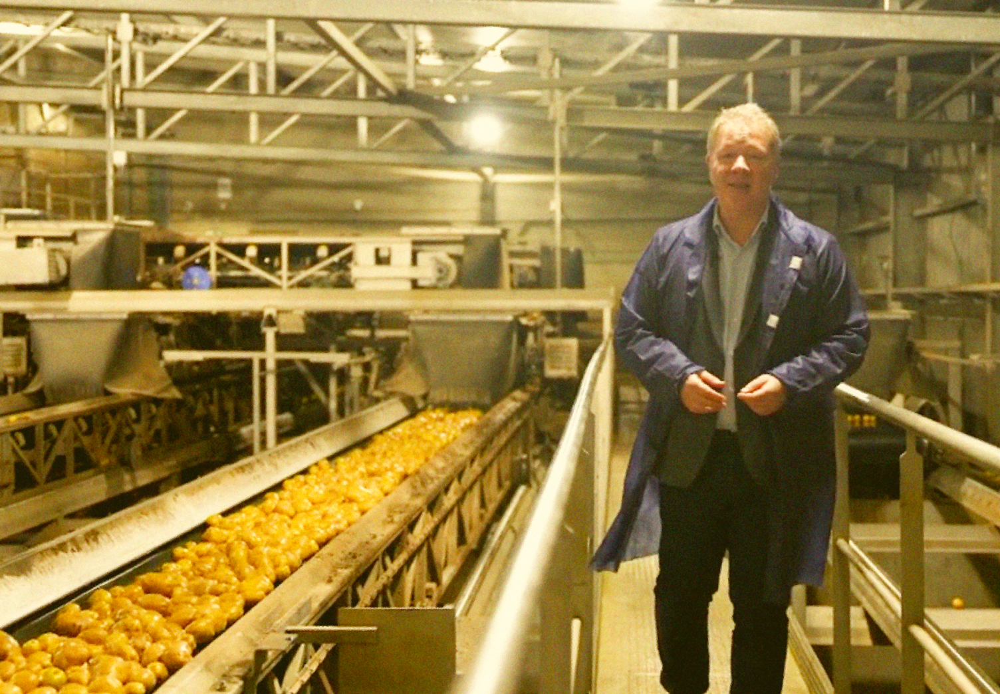
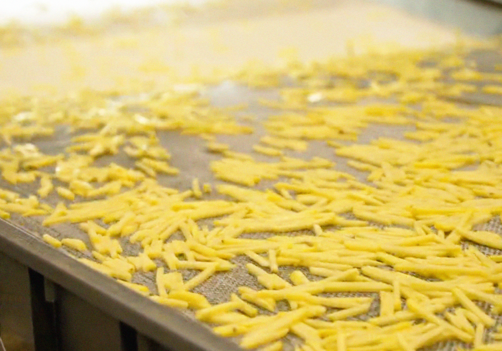
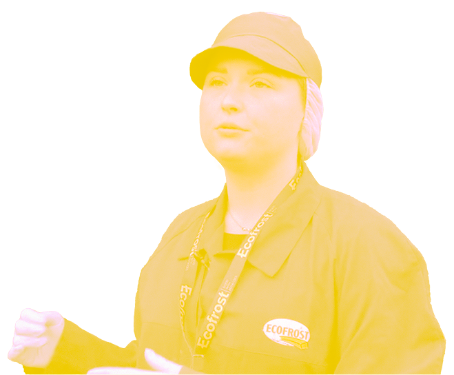
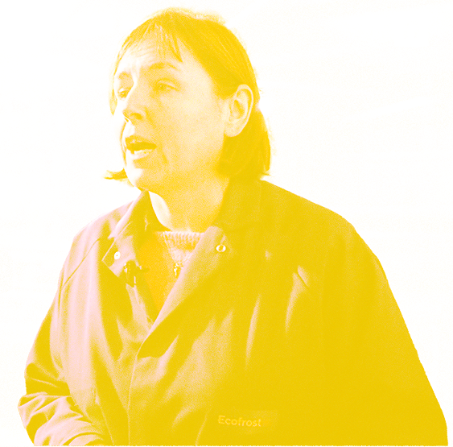

La Belgique est l'un des plus grands exportateurs de frites surgelées au monde.
Ecofrost exporte la frite belge à travers le monde
L'entreprise
Ecofrost
Fun fact
Ecofrost transforme 700 000 tonnes de pommes de terre par an.

Le savais-tu ?
Si on alignait toutes les frites produites en une année, elles pourraient faire plusieurs fois le tour de la Terre.
À ton avis combien de pays mangent des frites produites à Péruwelz ?
QUIZZ TIME ?
Production &
organisation
Fun fact
Seulement 50% d'une pomme de terre devient une frite.

Le savais-tu ?
Le reste de la pomme de terre n'est pas perdu.
Il est transformé en purée, croquettes, flocons ou alimentation animale.
Pourquoi doit-on sécher les pommes de terre avant de les stocker ?
QUIZZ TIME ?
Économie &
chiffres clés
Fun fact
70% des produits fabriqués par Ecofrost sont des frites classiques.

Le savais-tu ?
Les frites enrobées (plus croustillantes) représentent 20% du marché
« Aujourd'hui, environ 70 % de notre production est constituée de frites classiques, 20 % de frites enrobées et le reste correspond aux autres spécialités à base de pommes de terre. »
Consommateurs
& marches
Fun fact
Les preferences de frites changent selon les pays.

Le savais-tu?
"Les preferences ne sont pas les memes selon les pays."
- Belgique : frites classiques
- Royaume-Uni : frites bien dorees
- Japon : frites tres carrees
- Moyen-Orient : frites plus blanches
Envie d'une activite ? De plus en plus de consommateurs veulent savoir d'ou viennent les produits et rencontrer directement les producteurs. Certains vont chercher leurs pommes de terre directement dans les champs ou a la ferme, montrant l'interet croissant pour les circuits courts.
Selon toi, quel continent mange le plus de frites belges ?
QUIZZ TIME ?
Qui y travaille ?
Claire Hoflack - CEO
• Son role
Elle dirige l'entreprise et porte la strategie de developpement.
Audio a ajouter
Qui y travaille ?
Olivier Maes - Production / R&D
• Son role
Responsable de la production et de l’innovation.
Audio a ajouter

Qui y travaille ?
Antoine Van Wynsberghe - Agriculteur
• Son role
Producteur de pommes de terre partenaire de l’entreprise.
Audio a ajouter
Qui y travaille ?
Interview 4 - A renseigner
Son role
Ajoute ici le texte final quand tu seras prete.
Audio a ajouter

Qui y travaille ?
Pauline Jean - Directrice achat et matière première
Son role
Directrice achat et matière première
Audio a ajouter
